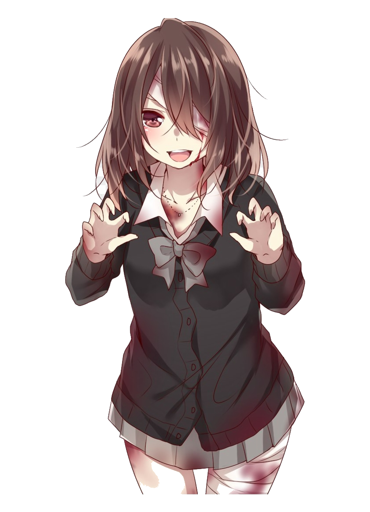

1. Install
Open the app and let macOS do its tsundere little permission routine.
On first launch, macOS may ask for Input Monitoring and Accessibility. That is the price of making your laptop act a little too alive.
kawaii menu bar nonsense, lovingly engineered
GiggleTouch is a tiny free Mac app that turns innocent two-finger strokes into sparkly little giggles. It is unserious software with anime-main-character energy.
The whole bit lives quietly in your menu bar until your fingers get curious, then it answers with a random little laugh like your laptop just developed a blush.
Menu bar only. Mac only. Cute enough to be suspicious.

What this thing actually does
No bloated dashboard. No weird account. No productivity claims. Just a cute little menu bar gremlin waiting for protagonist-level attention.
The joke works because it is immediate. Stroke the trackpad, hear a giggle, try not to lose your composure in public, fail gracefully, repeat.
1. Install
On first launch, macOS may ask for Input Monitoring and Accessibility. That is the price of making your laptop act a little too alive.
2. Touch
Scroll up, scroll down, slow, quick, shy, dramatic. If the gesture registers, the app picks a random giggle and lets the bit land.
3. Repeat
It lives in your menu bar, keeps things lightweight, and politely avoids stacking too many giggles at once like some kind of overexcited side character.
Free Download
If this improves your day, wonderful. If it makes you laugh at your own laptop in public, even better.
Built for macOS. Menu bar app. Shamelessly kawaii.